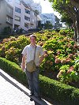
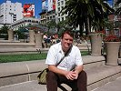

|
|
|
lornaland.co.uk Holidays Photo Gallery Lornaland Natter USA 2005 Journal Menu...New YorkBoston Cooperstown Buffalo Las Vegas Death Valley Yosemite National Park San Francisco San Simeon Los Angeles San Diego San Francisco Pictures |
San Francisco21st - 24th September 2005Wednesday 21st September 2005We set the alarm for an early start. By 8.00m we were on our way with a little detour to Degnan's Deli for breakfast. Once on the open road, we headed away from Yosemite on that horrible road - Highway 120! Of course we found our way without any problems, not scary at all. We made a restroom stop at 10.30am (before Burger King has even opened) and bought a lot of Chinese food from the supermarket which we scoffed in the car. We finally made it to San Francisco around 1.30pm. After checking into to the hotel, The Taylor Hotel, and dropping the car off, we relax for a bit in the hotel before getting ready for dinner. We left the hotel at around 5.00pm and wandered down to Union Square. We hopped on a cable car and headed off to Fisherman's Wharf. Feeling hungry we eat a bit early. After stuffing our faces at the Wipeout Bar & Grill, we wander along Fisherman's Wharf towards the cable car stop. We mooch in a few shops along the way and spot the perfect present for Johnson, a tin landrover sign. We take the cable car back towards Union Square and decide to stay on until the end of the line. We wander around looking for a place to have a little nightcap and end up propping the bar of an Irish pub for some time. After a few drinks, we pay up and get ready to leave until a marine from Boston starts buying us lots of drinks. Eventually we leave very drunk and manage to stagger back to our hotel. Thursday 22nd September 2005We had a bit of a lazy morning before heading out into San Francisco for our first full day. Today was my birthday present day and we had planned to head over to Sausilito early afternoon to have a look around before our flight at 5.00pm. First of all though, we had to go back to the bar from last night and find the sign we bought for Johnson! We find the bar no problem but unfortunately, there's no sign of the present. We're advised to call back later in the day in case it turns up so we head off empty handed, We arrive at Fisherman's Wharf by cable car and take a leisurely stroll along towards Pier 39. The wharf area is different by day, it looks a lot less tacky. We do a bit of mooching and realise we should head off to check the times of the ferry to Sausilito so we head over to the Blue and Gold fleet ticket desk. We arrive just in time to see the last ferry of the day leave. Trying not to panic we start looking for alternative transport. First stop is a tourist information centre which we find on the top deck of Pier 39. The woman is quite helpful and tells us we have two choices. One is to take a taxi which would cost around $40 one way, the other is to make a mad dash along to the ferry terminal to catch a ferry from there. We leave the expensive taxi option as last resort and jump on the F Line Street Car to the ferry building. We make it in time to get the 4.00pm sailing to Sausilito. Success! Next problem is finding a taxi! We try calling a cab without much success and just when I'm starting to panic, we spot one and arrive at the Seaplane base just in time. There is good news once we get there, we're told that we will have the plane to ourselves. The seaplane is very cool and we sip our champagne as we fly over Sausilito - home of the very rich in San Francisco. We weren't able to fly over the Golden Gate Bridge due to cloud which was a little disappointing but the whole trip was fantastic. We landed back in Sausilito around 6.00pm and we had a taxi waiting for us to take us back to the town to catch the ferry back over to San Francisco. We had some time before the last ferry at 7.20pm so we mooched about the shops and had a drink in a bar. We spotted some nice places to eat but the ferry at 7.20pm was the last one back so we weren't able to stay for dinner. We'd been talking about curries for a few days and decided we should have one tonight and we managed to find one with the help of our guide book It seemed a bit random inside, lots of people waiting to be seated and lots of empty seats in the restaurant. We were seated quite quickly and eagerly read the menu. We'd decided on a main meal and a side dish each. I sent my side dish back as it was not what I'd ordered though when my proper dish came, it didn't look too appetising. Curries just aren't the same as in England. After dinner, we headed back to the hotel to bed. Friday 23rd September 2005Today we visited Alcatraz. We'd booked a morning trip and were on the 11.15am ferry. The crossing was a bit choppy which only added to the whole experience. After listening to the ranger on the dock for a while, we headed up to the jailhouse to start our audio tour. The tour was very interesting and included commentary from ex-inmates of Alcatraz. It was quite a spooky place. After Alcatraz, we headed on a cable car to see Lombard Street, the crookedest street in the world. We couldn't manage to jump on a cable car so decided to walk a couple of blocks in the hope the stops would be quieter. Eventually we managed to jump on a car and headed down to Chinatown. There was lots of tempting treats in the stores of Chinatown and strangely, I resisted temptation and came away empty handed.  On our walk we found a little microbrewery called The San Francisco Brewing Company so we wandered in for a look. It was a nice little bar with a good selection of beers and a nice sounding menu and as they were to have live jazz on in the evening, we decided to return here for dinner. The live band was really good and they actively encouraged everyone to join in with the percussion - aka hitting cutlery on anything that will make a noise. It was very fun! Saturday 24th September 2005 Our last day in San Fran! The sun was shining when we left the hotel and we wandered the streets mooching in shops. We finally managed to purchase a copy of the Lost DVD so we could catch up when we got home. We headed back up to Union Square for a visit to the Cheesecake Factory in Macy's. We made a stop in the Macy's Christmas Store which was a huge shop full of Christmas ornaments and playing Christmas music. We made our way up to the top floor of the Macy's to the Cheesecake Factory. We hung around to see if we could get a table but it was packed so we got our cheesecake to take away and enjoyed it in the sun on the steps out in Union Square. The cheesecake was very yummy but very filling. After cake, we head off back to the wharf for a visit to the aquarium. We see some cool fish and Dan gets to touch a sea urchin while I stroke a shark. For dinner tonight we head over to Chinatown. It's hard to choose where to go and we eventually decide on the "New Woey Loy Goey" restaurant. It's tucked down some steps on a side street and is full of Chinese people - always a good sign. The food is cheap and really good. After dinner we catch our last cable car ride home. |